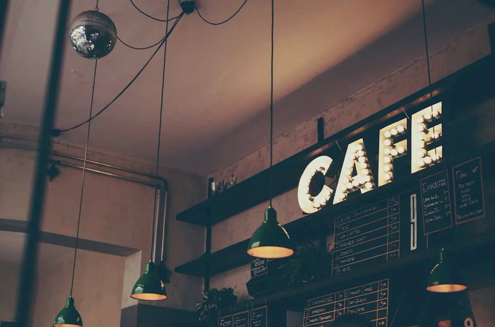

hello from the noisy side of the internet
We make things work-ish.
Spare Parts is a small Nigerian dev collective. We build useful software, strange prototypes, and the occasional thing that begins with “this should be quick”.
* yes, the name is from a drawer full of cables.
the sensible ideas
go to become side quests.
what we are up to
Small team.
Big browser tabs.
We like the bit before the pitch deck. The rough sketch. The “wait, why does this button do that?” We ship small, learn in public, and keep enough room for a proper suya break.
no mysterious black boxes, please ↗

follow the scribble
Start anywhere.
There is no perfect order here. Click a node, follow the bus, or wander off into the lab like a normal person.